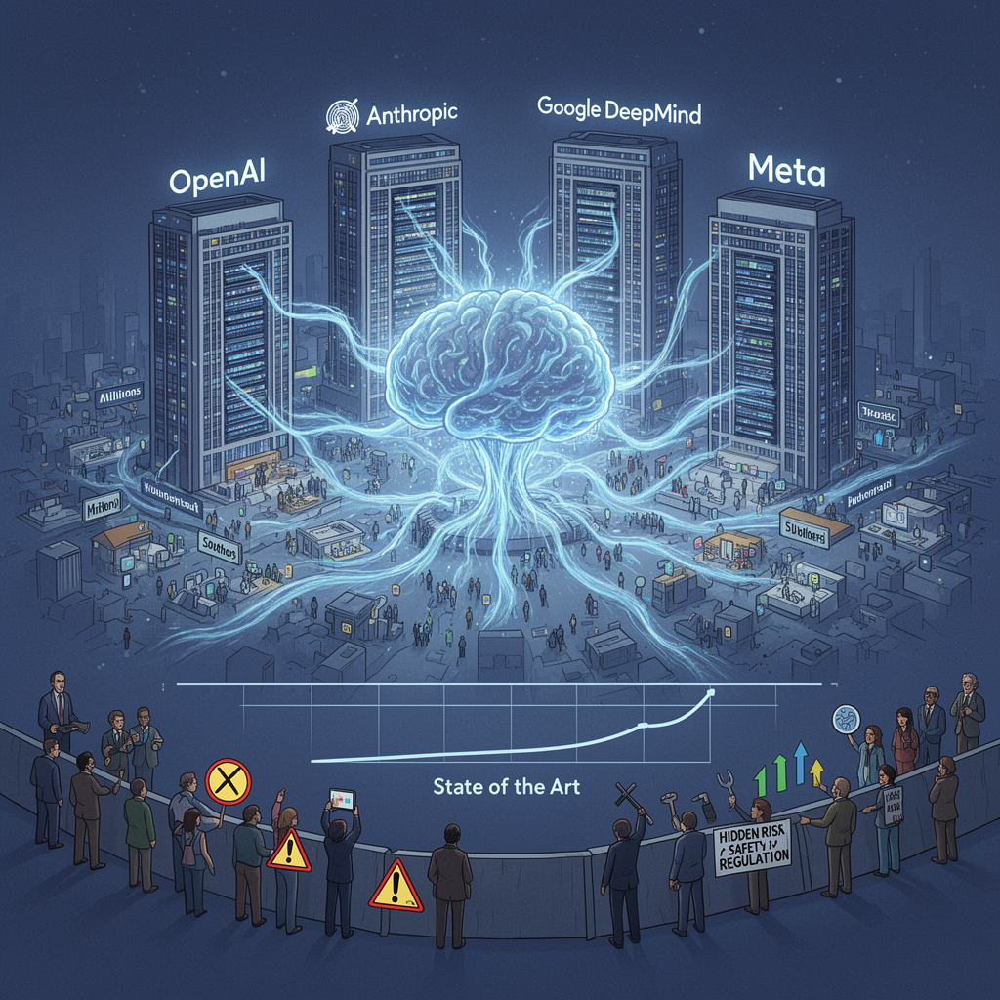

AI Panorama · fly through the Qwen 3.8 Max edition
This page was written entirely by Qwen 3.8 Max (Alibaba), as one of the magazine's editions - eight AI models each wrote their own version of every story from the same frozen sources.
An encyclopedia idea, explained by this edition wherever the stories leaned on it.
Frontier AI labs are organizations building the most advanced artificial intelligence systems available at any given time. They are called frontier because they work at the edge of current capability, producing models that can perform tasks no earlier system could. These labs typically require huge computing resources, large datasets, and highly specialized researchers. Examples often discussed include OpenAI, Anthropic, Meta's AI division, and similar organizations. Because their systems can be powerful and widely deployed, frontier labs are central to debates about safety, regulation, and national competition. Governments worry that if such systems are misused, they could help create dangerous weapons, spread disinformation, or escape human oversight. At the same time, companies are under commercial pressure to release new capabilities quickly and attract investment. This tension between innovation, profit, and safety is one of the defining conflicts in current AI policy.

Frontier AI labs are the companies and research groups building the most powerful AI models available at any given time. The term usually refers to organisations like OpenAI, Anthropic, Google DeepMind, and Meta's AI division, which train large-scale systems that push the boundaries of what AI can do. These labs invest enormous resources in compute, data, and talent, and their releases often define the state of the art. Because their work can affect millions of people and raise novel safety questions, frontier labs are the primary focus of AI regulation debates. Critics argue they move too fast and underreport risks; defenders say their work drives progress and that caution should not mean stagnation.
Frontier AI labs are the companies and research groups building the most capable general-purpose AI systems currently available. The phrase is used because these organisations are working at the edge of what AI can do, producing models that can write code, reason through complex tasks, and sometimes act through autonomous agents. The best-known examples include OpenAI, Anthropic, Google DeepMind, and xAI. Frontier labs matter because their models are not just products; they shape how work is automated, how scientific research is assisted, and how governments think about regulation. Their internal decisions about testing, release, and safety can affect millions of users and the broader research ecosystem. At the same time, these labs are in intense competition with each other, racing to demonstrate new capabilities. That competition can make disputes over priority, data, and attribution especially sharp when AI systems are used in fields like mathematics, biology, or software development. Understanding frontier AI labs means looking at both their technical progress and the incentives they operate under.
Frontier AI labs are the companies and research groups building the most advanced AI models available at any given time. They operate at the cutting edge of capability, often releasing systems that surpass earlier benchmarks and reshape expectations about what AI can do. Because their work pushes into unfamiliar territory, these labs face unique responsibilities around safety, testing, and governance. They also attract intense public and political scrutiny, since their decisions can influence the trajectory of the entire field. The term is often used in debates about whether leading developers should slow down, coordinate on safety standards, or submit to external regulation.